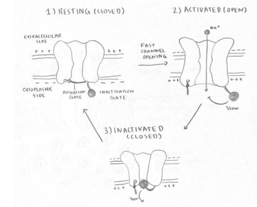

Voltage-gated ion channels are a type of ion channel that open or close in response to changes in the electrical potential (voltage) across the membrane. These channels are essential for generating and propagating electrical signals in neurons, such as the action potential, and play a crucial role in excitable cells like muscle and nerve cells.
Voltage-gated ion channels are proteins embedded in the cell membrane. They have voltage-sensing domains that detect changes in membrane potential. When the membrane depolarizes to a certain threshold, the channels change conformation, allowing specific ions (such as sodium, potassium, or calcium) to flow in or out of the cell.
Here's a general breakdown of their function:
These channels are essential for the rapid transmission of electrical signals, such as action potentials, allowing neurons to communicate over long distances.
